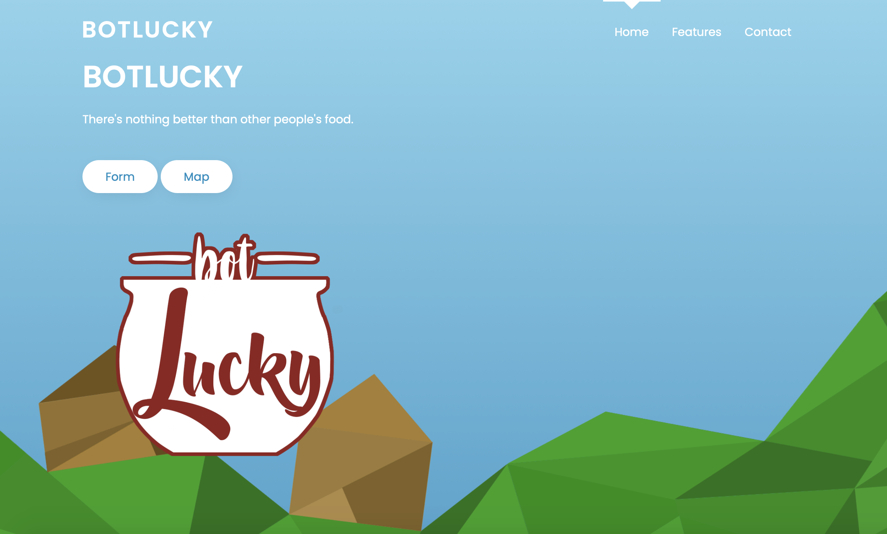

Work Escape: The website, created as a final project in Girls Who Code Summer Program, highlights gender discrimination in the workplace, including gender stereotyping and roles. It features a couple of minigames and statistics about gender disparity in tech and medicine.
Featured on Girls Who Code Website.
Languages: HTML, CSS, Javascript, Bootstrap
Software: Adobe Photoshop
Botlucky: During the Superposition II Hackathon, my team and I built a website that encourages people to share their leftover food with their community. A form must be filled first, then the location of the food is placed onto a Google Maps using Google API.
The website won Best .tech Domain
Languages: HTML, CSS
Platform/App: Google API, Google Forms
Software: Adobe Photoshop
Portfolio Website: Because my last website, created in 2017, was my first time using HTML and CSS, I wanted to revamp my portfolio website to be more user friendly. In addition, I utilized my design skills to create my own favicon, navigation bar icons, and logos.
Languages: HTML, CSS
Softwares: Adobe Photoshop, Lightroom
Next Project: 
Stay Tuned!